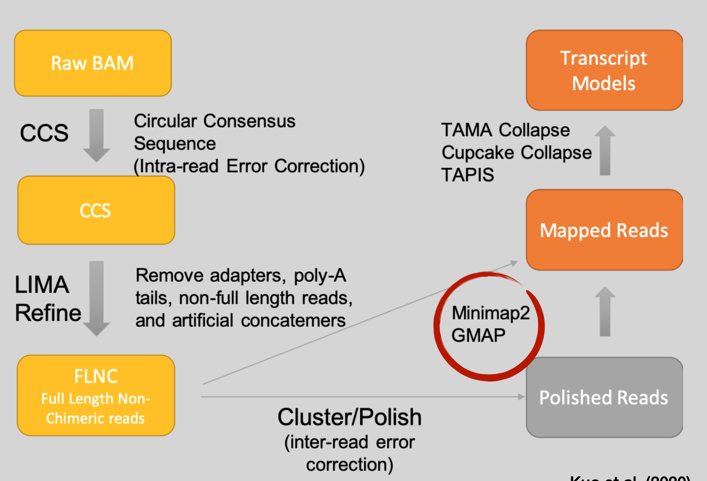
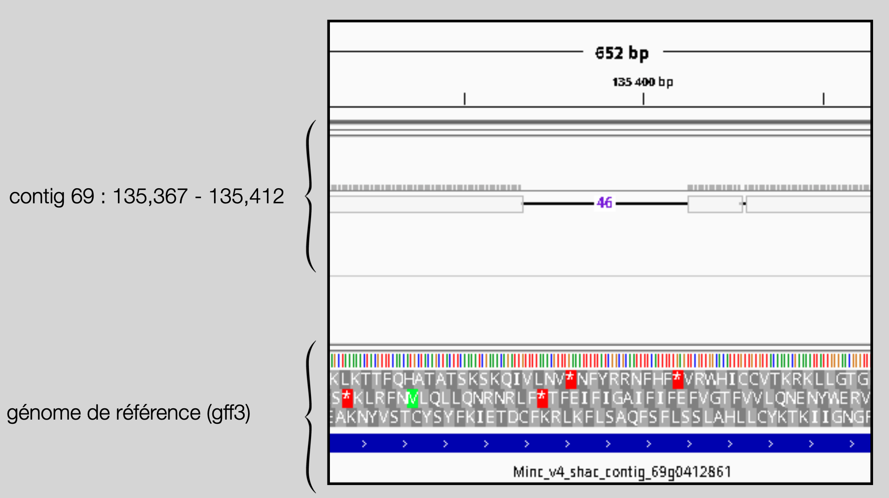
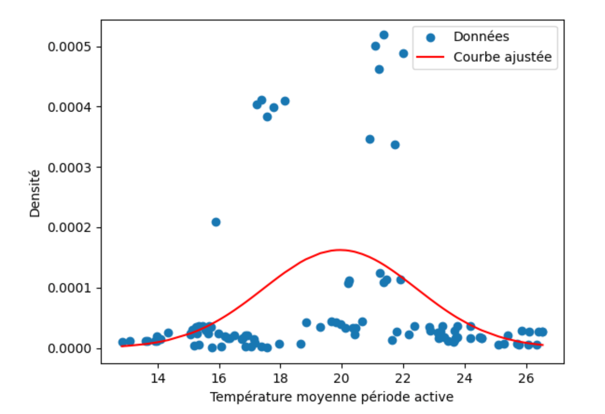
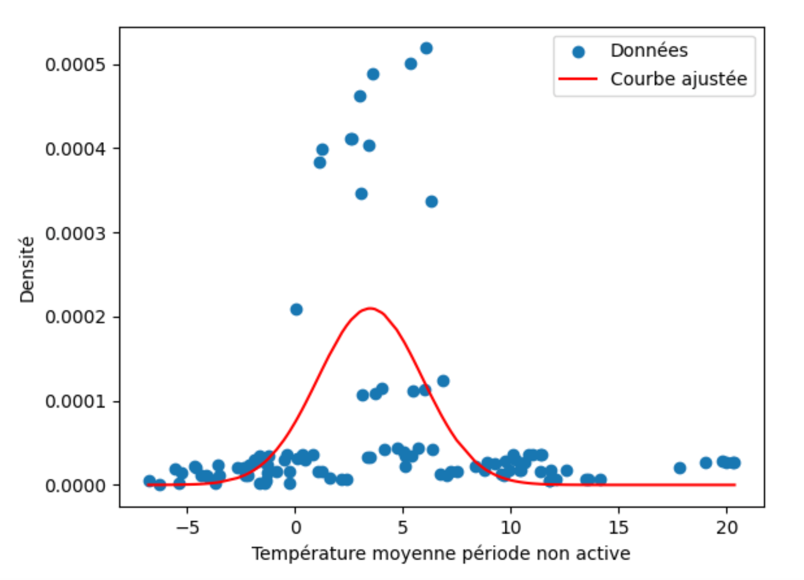
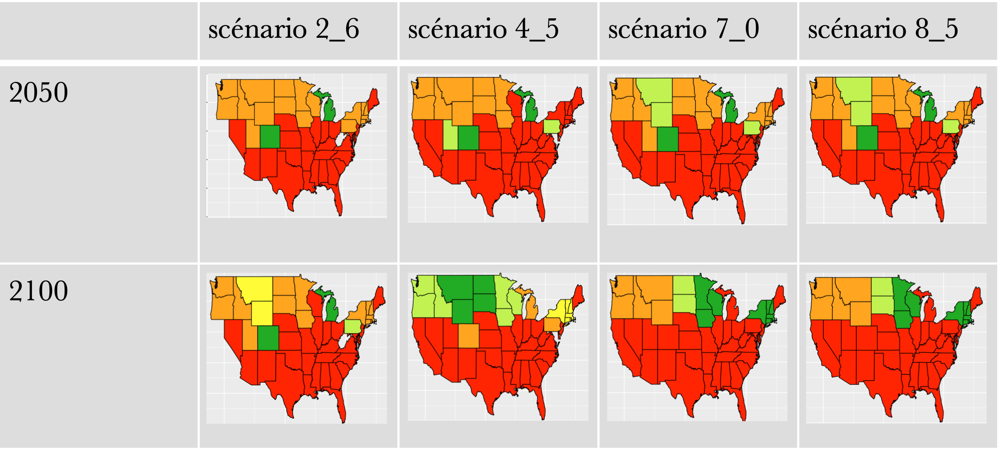

Karim Bouchaara
M2 Bioinformatics & Data Science student
Looking for a 6-month internship (from mid Jan 2026) in Data Science / Machine Learning or Bioinformatics.
I work at the intersection of machine learning, structural biology and omics data: deep-learning pipelines for cyclic peptide design, RNA folding (Kaggle), long-read transcriptomics and climate-driven modelling.
About
I am a Master’s student in Bioinformatics at Université Paris Cité. After two academic research internships, I now want to join a tech or biotech start-up to work on real-world data and ML pipelines.
Skills
Machine Learning & Data
- Python, R, SQL
- scikit-learn, PyTorch
- BiLSTM, Conv1D, Transformer models
- Preprocessing, feature engineering, model evaluation
Bioinformatics & HPC
- RFdiffusion, ProteinMPNN, RoseTTAFold2
- Iso-Seq PacBio, BLAST, minimap2, gmap
- Linux, SLURM, Singularity / Apptainer, GPU clusters
Internships & Projects
Internship RPBS – 2025
Pipeline overview [RFpeptides pipeline]

During my M1 internship at RPBS I implemented part of the RFpeptides deep-learning pipeline for cyclic peptide design, from target definition to sequence optimisation and structural validation. I ran large batches of RFdiffusion, ProteinMPNN and RoseTTAFold2 jobs on a GPU cluster using SLURM and Apptainer, and automated the analysis of generated models.
Structural superposition of cyclic peptides [Cyclic peptide superposition]

Confidence vs accuracy [pLDDT vs RMSD]

I evaluated the designs by superposing predicted and native cyclic peptides and by analysing the relationship between model confidence (pLDDT) and structural accuracy (RMSD) across all generated models.
Internship INRAE – 2024
During this internship, I benchmarked long-read transcriptomics tools on Iso-Seq PacBio data and optimised alignment strategies for accurate isoform reconstruction. My work focused on installing, containerising and comparing several pipelines (TAGET, ASAPA, TAMA), and tuning alignment parameters for minimap2 and gmap on an HPC cluster (SLURM, Singularity/Apptainer).
Reducing soft-clipping through alignment parameter tuning [Soft-clipping optimisation]
I evaluated the impact of alignment options (end-bonus, trimming thresholds, splice modes) to minimise soft-clipped regions and improve transcript completeness, using IGV to inspect mapped reads and identify consistent parameter choices across datasets.
Alignment differences on M. incognita reads [GMAP mapping differences]
By comparing GMAP alignments with reference genome annotations (.gff3), I highlighted mismatches between transcript structures and genomic models, useful for downstream isoform interpretation and annotation improvement.
Overall, I contributed by providing a clear benchmarking framework for long-read analysis tools, identifying compatible pipelines and optimising alignment parameters for Iso-Seq datasets. This work improved the reliability of isoform reconstruction and provided the lab with validated HPC-ready workflows for future analyses.
Climate modelling project – 2023
In this project I used county-level tick occurrence data from the CDC and regional climate projections (NASA / IPCC SSP2-4.5, SSP1-2.6, SSP3-7.0, SSP5-8.5) to model how temperature will affect the population density of the black-legged tick (Ixodes scapularis) in the United States over the 21st century. :contentReference[oaicite:1]{index=1}
Temperature–density relationship during the active season
I fitted a Gaussian niche model between mean temperature during the active season and tick density. The curve shows an optimum around 20 °C, with a relatively wide tolerance, which we use as the basis for predicting suitability under future warming. :contentReference[oaicite:2]{index=2}
Temperature–density relationship during the inactive season
A similar model for the inactive season shows an optimum around 3.5 °C and a narrower tolerance, revealing how winter conditions constrain the long-term persistence of I. scapularis in colder regions. :contentReference[oaicite:3]{index=3}
Future suitability maps for the United States (2050 & 2100)
For each decade and each SSP scenario, I combined the seasonal temperature projections with the fitted niche models to classify states into five categories of temperature suitability:
- Unsuitable – red
- Poorly suitable – orange
- Acceptable – yellow
- Favourable – light green
- Optimal – dark green
The maps for 2050 and 2100 under the four scenarios highlight a transient window of high suitability in many northern states under strong-warming pathways, followed by a decline in suitability by the end of the century, while southern states remain largely unsuitable throughout. :contentReference[oaicite:4]{index=4}
Contact
Email: karimbchr4@gmail.com
GitHub: github.com/karimbchr